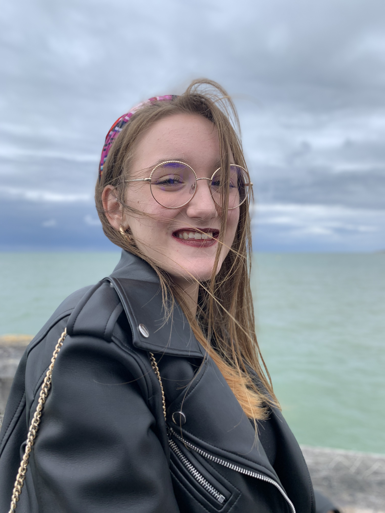

Curriculum vitae

Recherche de stage en communication externe
Formations
Lycée du Noordover Grande-Synthe, Bac Littéraire 2017
Licence d'histoire Lille 3 2017-2019
Permis B 2018
ISEG Lille école de communication, marketing et digital 2019
Accueil
Expériences
Formations